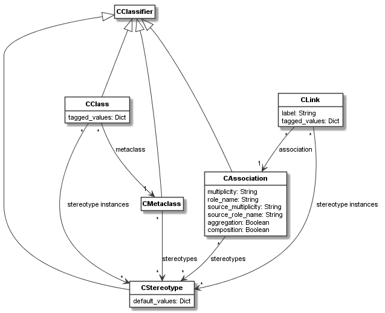

codeable_models.CStereotype¶
-
class
codeable_models.CStereotype(name=None, **kwargs)¶ CStereotypeis used to define stereotypes and stereotype instances. Meta-classes and meta-class associations can be extended with stereotypes.Superclasses:
CClassifier- Parameters
name (str) – An optional name.
**kwargs –
Pass in any kwargs acceptable to superclasses. In addition,
CStereotypeaccepts:extended,default_values.extended:Takes a single or a list of either
CMetaclassobjects orCAssociationobjects to be extended with this stereotype. Association objects must be meta-class associations. Using thestereotypesproperty on the meta-classes or association is an alternative method for defining theextendedrelation.
default_values:Takes a dict of default values for the values of the extended meta-classes or meta-class associations. Those default values shadow any default value defined for attributes on the meta-classes or meta-class associations themselves. That is, with
default_valuesthe stereotype can add or change default values of the extended classifiers.
Examples:
Consider a simple component meta-model is defined like this:
component = CMetaclass("Component") connectors_relation = component.association(component, "connected to: [source] * -> [target] *")
If we want to use stereotypes to distinguish component types, we can extend the meta-class with:
component_type = CStereotype("Component Type", extended=component)
Now more specific component types can be defined as sub-classes of the stereotype:
service = CStereotype("Service", superclasses=component_type) database = CStereotype("Database", superclasses=component_type)
We can also extend the meta-class association with stereotypes, e.g.:
connector_type = CStereotype("Connector Type", extended=connectors_relation)
Now we can introduce more specific connector types based on this stereotype as sub-classes:
jdbc = CStereotype("JDBC", superclasses=connector_type) mongo_wire = CStereotype("Mongo Wire", superclasses=connector_type) restful_http = CStereotype("RESTful HTTP", superclasses=connector_type) soap = CStereotype("SOAP", superclasses=connector_type)
Main Relations:
The main relations of
CStereotypeare shown in the figure below.As can be seen, each
CStereotypeis aCClassifier. Meta-classes and meta-class associations can be extended with stereotypes. If this is the case, those stereotypes can be used as stereotype instances on the classes of the meta-class or links of the association, respectively.-
property
all_extended_instances¶ Getter for all the extended instances, i.e. the classes or class links extended by this stereotype, including those on subclasses.
-
association(target, descriptor=None, **kwargs)¶ Method used to create associations on this stereotype. See documentation of method
associationonCClassifierfor details.- Parameters
target – The association target classifier.
descriptor – An optional descriptor making it easier to define associations with a simple string.
**kwargs – Accepts all keyword arguments acceptable to
CAssociationto define associations.
- Returns
The created association.
- Return type
-
property
default_values¶ Getter and setter for default values. Takes a dict of default values for the values of the extended meta-classes or meta-class associations. Those default values shadow any default value defined for attributes on the meta-classes or meta-class associations themselves. That is, with
default_valuesthe stereotype can add or change default values of the extended classifiers.Stereotypes, as subclasses of
CClassifier, can also define attributes, which are the definitions of the tagged values of the stereotype. Default values should not be confused with those tagged value attributes (and their defaults). The default values concern the attributes values defined on the meta-class that is extended by the stereotype.- Type
dict[str, value]
-
delete()¶ Deletes the stereotype. Removes it from all meta-classes or meta-class associations it extends. Calls
delete()on superclass.- Returns
None
-
delete_default_value(attribute_name, classifier=None)¶ Deletes a default value defined on the stereotype or its superclasses with the given
attribute_name. Optionally the classifier to consider can be specified. This is needed, if one or more attributes of the same name are defined on the inheritance hierarchy. Then a shadowed attribute can be accessed by specifying its classifier.- Parameters
attribute_name – The name of the attribute.
classifier – The optional classifier on which the attribute is defined.
- Returns
Value of the attribute.
- Return type
Supported Attribute Types
-
property
extended¶ Getter and setter for extended classifiers. Takes a single or a list of either
CMetaclassobjects orCAssociationobjects to be extended with this stereotype. Association objects must be meta-class associations. Using thestereotypesproperty on the meta-classes or association is an alternative method for defining the extended relation.- Type
CMetaclass | list[CMetaclass]
-
property
extended_instances¶ Getter for the extended instances, i.e. the classes or class links extended by this stereotype.
-
get_default_value(attribute_name, classifier=None)¶ Get a default value defined on the stereotype or its superclasses with the given
attribute_name. Optionally the classifier to consider can be specified. This is needed, if one or more attributes of the same name are defined on the inheritance hierarchy. Then a shadowed attribute can be accessed by specifying its classifier.Stereotypes, as subclasses of
CClassifier, can also define attributes, which are the definitions of the tagged values of the stereotype. Default values should not be confused with those tagged value attributes (and their defaults). The default values concern the attributes values defined on the meta-class that is extended by the stereotype.- Parameters
attribute_name – The name of the attribute.
classifier – The optional classifier on which the attribute is defined.
- Returns
Value of the attribute.
- Return type
Supported Attribute Types
-
set_default_value(attribute_name, value, classifier=None)¶ Set a default value defined on the stereotype or its superclasses with the given
attribute_nametovalue. Optionally the classifier to consider can be specified. This is needed, if one or more attributes of the same name are defined on the inheritance hierarchy. Then a shadowed attribute can be accessed by specifying its classifier.Stereotypes, as subclasses of
CClassifier, can also define attributes, which are the definitions of the tagged values of the stereotype. Default values should not be confused with those tagged value attributes (and their defaults). The default values concern the attributes values defined on the meta-class that is extended by the stereotype.- Parameters
attribute_name – The name of the attribute.
value – The new value.
classifier – The optional classifier on which the attribute is defined.
- Returns
None